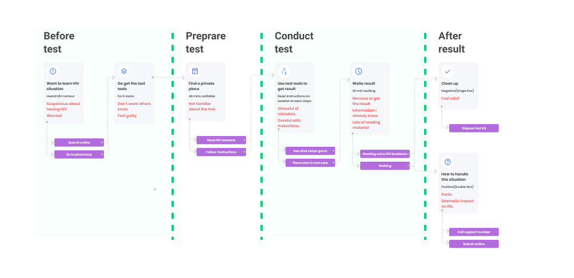

HIV TEST APPLICATION
Oraquick is an in-home HIV oral test kit for users to get HIV test results within 30 mins. But it might have false results which lead to bad product reviews. We designed the digital product for Oraquick to reduce the complaints by providing clear instructions and further assistance for the user with a positive result.
Roles
UX Design
Deliverables
Prototype
Tools
Figma
After Effects
Illustrator
Time
Seven weeks
Understanding
Desk research
First, I inspected the Oraquick test kit and tried it out to understand how the user would interact with it, and identified pain points might lead to a false result. They include:
- - There are various test requriements.
- - Critical informations hide in heavy text.
- - Little support information for positive user.
Research
User interview
From the desk research, I developed an interview guide to check each pain point and used to make sure the questions asked at the user interviews were systematic and comprehensive.
Research synthesis
The HIV in-home test was a stressful experience. From the thinking of getting the test kit to the end of the result, they were doing it with heavy mental burdens and stresses.
- - Suspicious about having HIV is the main reason that leads users to use the HIV test kit.
- - The fear from imagining the desperate future they might have gives user heavy mental stress.
- - I notice that even the HIV stigma had been wildly discussed, but people are still don't want to be blamed for it.
- - To correctly perform the test is easy because of the simple instruction flipbook, but they would miss the critical test requirement on the supplementary HIV booklet.
Define
Storyboard - original
Storyboard - new
Design principle
Friendly
Since users have heavy mental stress, the script and interface should be friendly and comfort them.
Simple
Users should be effortlessly guided through the test process and understand the test required to get a reliable result.
Trustworthy
The digital product should be able to inherit the privacy feature of the in-home test kit.
Design goal
I aim to clarify the test requirements and accuracy and add more care to people with a positive result.
The step and step instructions can easily direct the user to do the test correctly, but there are dense texts. The waiting time is exhausting for users rather than boring because the user takes the test very seriously. The anxiety is much more than I imagined. That explained why the user gave such harsh criticism on the false-positive result. After discussing with the team, we decided our design goals for reducing complain about false results:
- - Users with a positive result would feel being cared for. And the support center has more calls.
- - The user would follow the instruction and clearly know the requirements for a reliable result.
Ideate - feel being cared
Addressing caring the positive users
More than a subjective test kit and adding extra cares for positive users.
With the issue that there is a possibility of a false result, I decided to not only focus on help users correctly following the instructions but also guild the positive user thorough the experience of HIV confirm and healing. From the user interview before, users are likely to have the fears for the hopeless life with HIV and the unimaginable destruction to their life because they might have the stigma of HIV or not knowing the facts of HIV. "The internet just drives you crazy." These fears and hopeless turn into loud complain when they learn false results fooled them.
User journey
The initial idea - support
I aimed to ideate on caring methods for positive users. Most of the supports information focused on people already confirmed with HIV.
I had ideas that the application shows the treatment of HIV and HIV support policy. Still, there were concerns that before confirming test results from a doctor, positive users are not HIV patients. My other ideas include HIV patients' lives with hope and showing how they positively handle the diseases and difficulties in life. Knowing the users' situation and providing trustful stories related to them are the main challenges.
- Searchable gov information.
- Lack of hierarchy?
- Suggest calling the support line.
- A big step forward.
- Doctor around.
- Limited information.
- HIV Q&A
- Articles and videos for different situations.
- Landing page for potential HIV.
- Can't come back.
- HIV community links.
Ideate - feel being cared
The initial idea - instruction
Chopping blocks of text into small pieces and talk with users. And provide specific support for users.
I aimed to ideate on humanizing onboarding experience. Take it easy also calm down our users. I have ideas that turn dense text into step by step simple dialog. Instead of putting a page of instruction and requirement text in-front of users' faces, the heavy reading work can become a warm chatting between user and application. And by learning the user's situation, we'd provide more specified instruction for users.
- Simple to consume information.
- Why would I trust a bot?
- Answers are immutable.
- Simple to understand each requirement.
- Always screen changing lose consistency.
- Always screen changing lose consistency.
- Easy to understand and visually comfort the user.
- Difficult for getting customized content.
- Easily navigate and track all steps.
- Difficult for adding customized content.
- Limiting question options.
- Clear direction.
- Lack of details.
- Difficult to maintain.
- Fewer mistakes and get confirmed on every step.
- Tedious inputting operation.
Test instructions - question & diagrams.
We decided to use the question to separate instructions and have a task status bar as an overview for consistency. In each step, there would be an explanation and illustration for details and comforting users.
Prototype - paper test
We asked people to test the flow to inspect the correspondence between questions and reasons.
User flow
Insight
Test, link, and treat—locator guild HIV positive user to the service around.
After a rapid test, we realized that users have various situations. At the same time, there are different policy details response to different issues, like house support, medical cost waive, pregnant support, transportation help, etc. And thinking about our initial idea is to adding care for potential HIV users. Instead of keeping them in the application with a bunch of information, it would be better to prepare the user to walk out of the application to find the right people providing specific help and confirm the test. Meanwhile, I learn the HIV prevention model is “test, link, and treat.” The community section is far more important than HIV facts for potential HIV users. The application could help positive user easier to get to HIV service locations. And this function would be a similar service as the support phone call to make the user feel being cared for. Meanwhile, the usage of this function can be easily tracked as an indicator.
We decided to add a Locator function for users to have a more distinct view of HIV services around them. The goal is to make the locator accessible and friendly for the user and reduce the friction of going to the test site.
Ideate - encourage to get connected
- Search by clinic name familiar to users.
- It is limited to the user's knowledge.
- Search primarily on the map for feeling accessible.
- Ask for the ZIP code for the initial map location.
- Users can choose where to go, doctorer, or communities.
- Pop up to show details, phone calls, and address.
- Easy to compare various locations.
- Show an example location to educate users.
- Show name tag.
- Move down the chose for more comfortable operating.
- Add a navigation icon to reduce tedious duplication.
Prepare potential HIV user to take a blood test
We provide information about HIV test service that would help the positive user get confirmation from the doctor. We also include the HIV.gov API for HIV service provider information to give a broader service for HIV patients, including treatments and mental health. When there is a high density of spots, the icon will show the amount of them. With the user's permission of zip code, the user would see the recommended service around them as a list or a map. Sorting and filter, like closest test service, language preference, and test type, would help the user to make a choice.
UX details
Result page
The last step in test instruction is the most stressful moment. Instead of just telling which pattern is positive or negative, we let the user select the pattern first to reduce emotional bias and use two-step confirmation, choose and submit to reduce the false result from misoperate.
Timer/reminder
The timer and reminder function would minimize stress from the user. The test time and date are critical for accuracy. Instead of letting the user take a note or watch the clock on the phone, which they might forget, the build-in timer lifts the burden from the user.
Notification
Privacy, privacy, privacy. It's critical to take care of privacy in the HIV test situation. And a sloppy notification would leak the personal information. We add how the notification will be after notification setting to give the user a sense of control and reduce the possibility of being seen by others.
We simplified the instruction and status bar to make it simple to read and follow.
These questions are edited and optimized from manual books. The instruction would give corresponded suggestions for various conditions. If right now is not the appropriate time to have a test, it would lead the user to set a reminder for a future test. We used the status bar to indicate the steps left for giving the user a sense of control, and know what's going to happen. In the test part, we used a different color to prepare the user for doing the test mentally.
Encourage the HIV positive user to take the double test and provided related support information.
To encourage the positive user to take a blood test, we add CTA on top. For users suspicious about their HIV, but not sure, the test list encourages people to do the regular test and review the test result. We use horizontal scrolls to help the user see more related categories on one screen.
Remove the list page, and utilize the popup details to encourage contact with HIV services.
Users would search the service based on service type and location. It’s hard for the user to make the contact decision with a long list of the service names. And we move the zip from the top to the lower part, which is placed in Thumb Zone. In the popup page, there are icons to clarify the information, add the CTA buttons to simplify the contact, save, and share process.